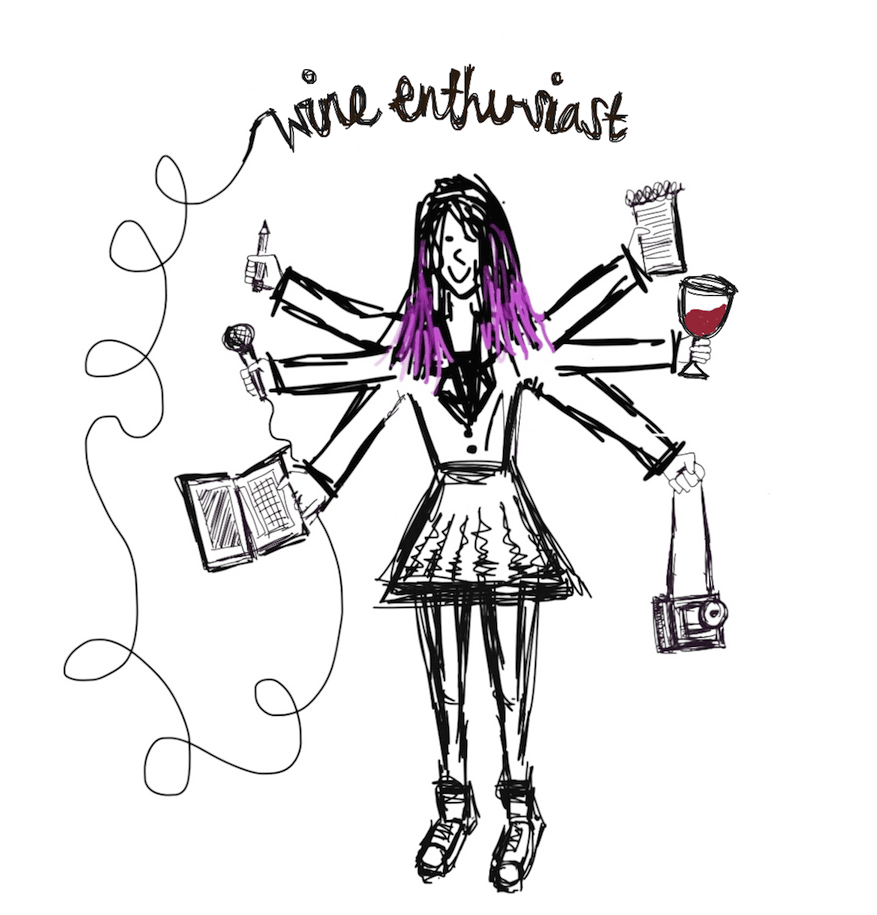
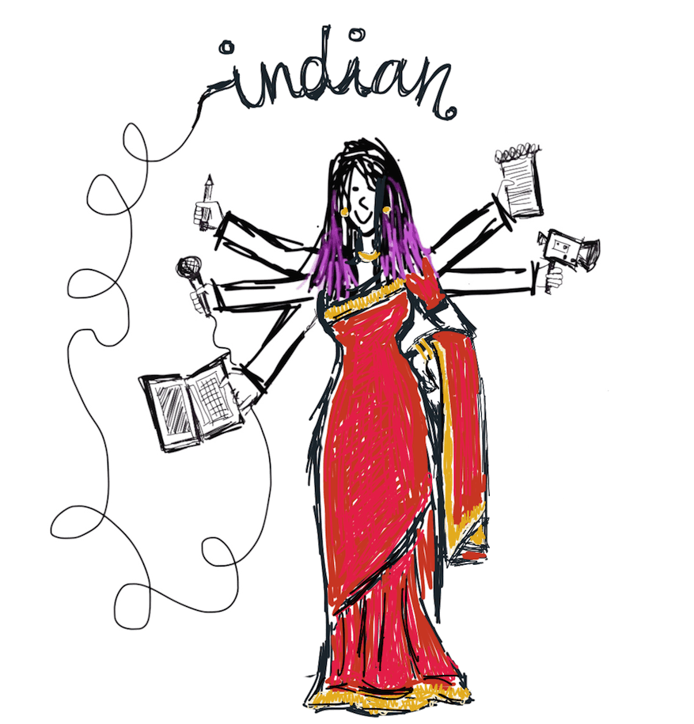
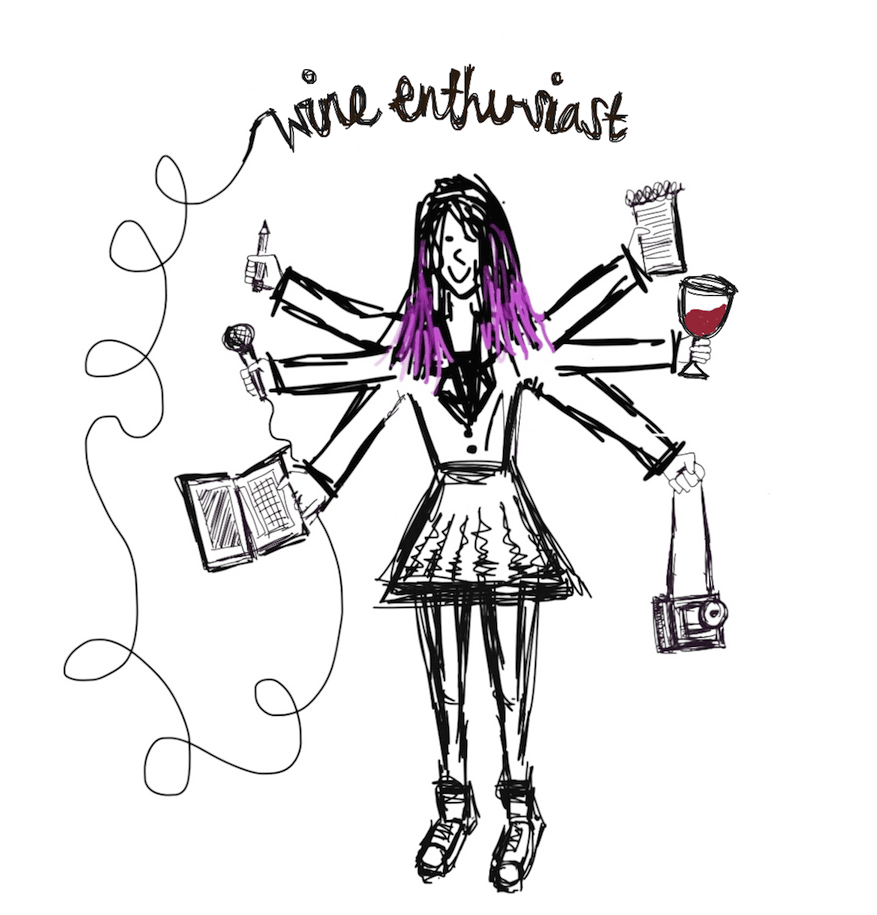
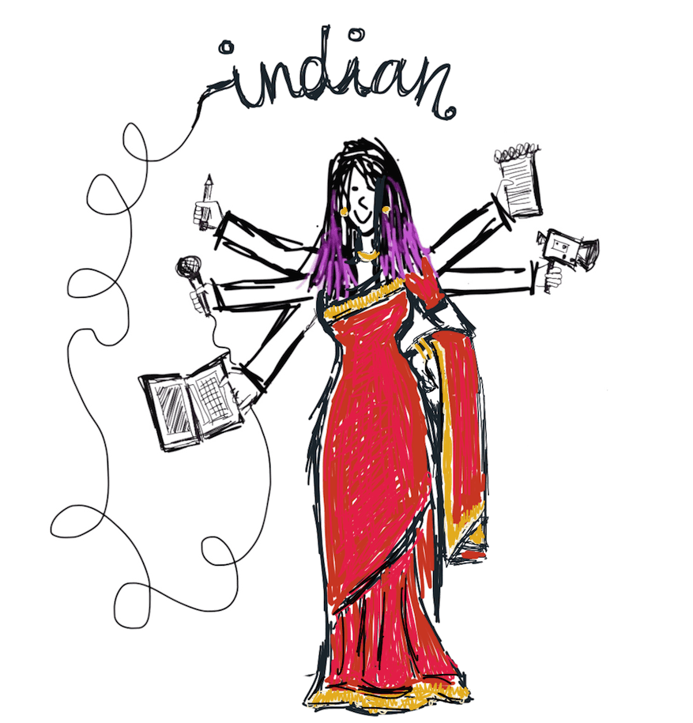

Dozens of transgender children and teens have been treated through a trailblazing Dallas clinic
In Reynosa, a Mexican border city, there are hundreds of assembly plants that feed global demand; but at what price?
On some blocks, states pay $1 million a year to incarcerate residents, and the cost to families can also be crippling
More than 2,500 Chicagoans were shot in 2014, but what happens to the vast majority who survive?
After the U.S. Supreme Court struck down life without parole for child convicts, Adolfo Davis hoped for a second chance
Sundhe Moses spent 18 years in prison for a murder he confessed to but says he wasn’t guilty of
One woman is battling street harassment by showing the world the faces of its victims
The Moapa Band of Paiute Indians thought coal ash from a nearby plant was killing them off, so they fought back
Self-described "mad junkyard dog" Patty Ameno has been on a mission to clean up her hometown's nuclear waste
Across the US, bank branches are closing in low-income communities, leaving residents with few financial options
Estaifan Shilaita has chosen a life in constant motion; once a boxing champ in Iran, he tells us what brought him behind the wheel of a Chicago taxi
On some blocks, states pay $1 million a year to incarcerate residents, and the cost to families can also be crippling
Dozens of children and teens have been treated through a trailblazing Dallas clinic
In Reynosa, a Mexican border city, there are hundreds of assembly plants that feed global demand; but at what price?
How does the trans community move on after Houston’s rejection of the ‘bathroom bill’?
Trailer park residents in the Austin area fight to keep one of its last strongholds of affordable housing
In some cities, nuisance laws force domestic violence victims to decide between calling police and staying in their home
Despite all the rights Americans with disabilities have gained in the last 25 years, the right to parent remains elusive
After the U.S. Supreme Court struck down life without parole for child convicts, Adolfo Davis hoped for a second chance
The son of two Bergholz Barbers speaks out for the first time about the insular Ohio community he says he escaped
Two candidates – one black, one white – in the country’s ‘biggest local election’ on the issues facing Ferguson
Self-described "mad junkyard dog" Patty Ameno has been on a mission to clean up her hometown's nuclear waste
Six weeks after Michael Brown's death, a police officer killed a black teen in Louisiana with no explanation
Two New Hampshire mothers call for politicians to fight for paid leave
One woman is battling street harassment by showing the world the faces of its victims
On health care, N.C. Mayor Adam O'Neal went a different direction from most other Republicans – for about 275 miles
Rape reports involving Montana football players led to a Justice Department overhaul of sexual assault policies
A new site, MyBabyBond.com, allows parents to register for money to cover time off with a newborn
 

Hello! My name is Ranjani Chakraborty, and I’m a Brooklyn-based freelance video storyteller. My work focuses largely on social justice, criminal justice, and inequality - and how they all intersect. I love a good story, and I’ll do nearly anything to tell it beautifully.
I previously produced with National Geographic on Explorer and Al Jazeera America on America Tonight. Prior to that, I was an associate producer with the NBC News Associates program in New York, where I contributed to Dateline, The Today Show, and Nightly News. During my time at 30 Rock, it’s important to note that Tina Fey once shook my hand.
I’m a Medill/Northwestern University alum, through which I’ve completed independent grant projects and international reporting in Johannesburg, South Africa; Pune, India; and Marrakesh, Morocco.
Want to say hi? Contact me using whichever is your favorite method from the icons above.
Or feel like you really need to get to know me first? For a more in-depth breakdown of the things I love, I drew y’all a handy diagram.